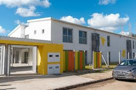

Hoy en día el sedentarismo y el uso constante del celular en los adolescentes es muy común, causando que los adolescentes dejen de practicar el deporte y a lo largo presenten problemas de salud, como por ejemplo: Perdida de masa muscular, fatiga, ansiedad, depresión y así como un aumento de enfermedades crónicas. Es por esto que ANEP tomo medidas para prevenir estos dichos síntomas en los adolescentes.
El objetivo de esto es conseguir que los jovenes tengan mas tiempo para el deporte y puedan mejorar su salud física y mental, también concientizar en los estudiantes la importancia de las horas que pasamos tras la pantalla del celular y encontrar nuevas formas de garantizar un mejor enfoque en los estudios.

Según dijo el Ministro de Educación y Cultura José Carlos Mahía2 y la Administración Nacional de Educación Publica (ANEP), la reforma aparentemente se aplicara en marzo del año 2026.

Consiste en agregar Educación Física como nueva materia obligatoria. Esto también implica un aumento en la carga horaria agregando una hora mas al horario semanal en todas las UTUs incluyendo al Instituto de Alta Especialización (IAE)

la reforma en el caso del instituto IAE se aplicara al igual que en otras UTUS del país, agregando educación física como una de sus materias obligatorias. Esto también implica un aumento de la carga horaria y un uso obligatorio del uniforme. Si esto ultimo no se cumple, se aplicara una sanción a aquellos estudiantes que no cumplan con estos términos. En el caso de las personas con discapacidades fisicas, no es necesario cumplir con estos terminos a exepcion del uniforme que seguira siendo obligatorio.
Es fundamental que los adolescentes incorporen hábitos saludables en su rutina diaria. Esta medida de ANEP no solo fomenta la actividad fisica, sino que tambien ayudara a mejorar el rendimiento academico y el bienestar integral de los estudiantes.
|
 | |
|---|---|---|